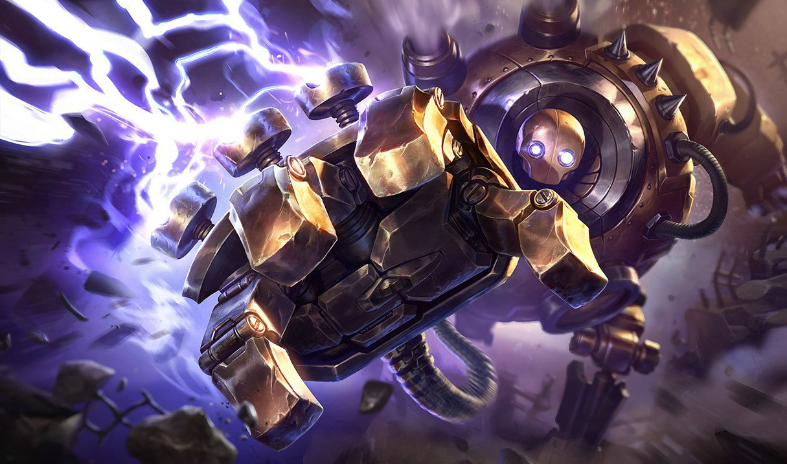

Mis Habilidades
- Captura no solicitada de objetivos
- Iniciación agresivamente amistosa
- Capacidad para recibir golpes
- Protección del ADC
- Aceleración táctica
- Silenciamiento estratégico
Perfil Profesional

Unidad mecánica de alto rendimiento especializada en enganchar lo inenganchable y generar caos organizado en entornos competitivos. Diseñado originalmente para labores industriales, actualmente me desempeño como soporte táctico en la Grieta del Invocador, donde mi misión principal es convertir errores enemigos en oportunidades legendarias. Reconocido por mi icónica frase: “Si te agarro, no vuelves igual.”
Mi experiencia
Especialista en Enganches Cuestionables – Grieta del Invocador:
- Inicio de combates con consecuencias impredecibles (emocionantes el 60% del tiempo).
- Generación de presión psicológica constante: el enemigo vive con miedo a los arbustos.
- Protección activa del tirador aliado y ocasional sacrificio heroico con resultados debatibles.
- Experiencia amplia en partidas clasificatorias, normales y decisiones dudosas bajo presión.